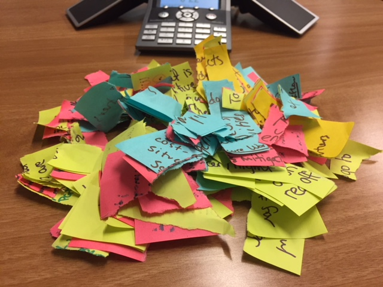

UX Workshops
 The UX (User-Experience) Workshop series under the second phase of the USABLE project (https://usable.tools) is designed to empower and enhance digital security trainers’ understanding of the specific usability roadblocks tool developers face in the design and deployment of their products, while also equipping trainers to better collect and foster important feedback loops between high-risk communities and tool developers.
* Learn basic design and user-experience concepts * Understand and practice how to integrate and collect critical feedback during digital security trainings easily * Connect and communicate with developers more efficiently * Gain access to digital security training funds post-workshop
Each community will create not only suggested changes for the tool they focus on, but also create user personas to help other tool developers better understand the constraints they face.
Follow our blog for updates!